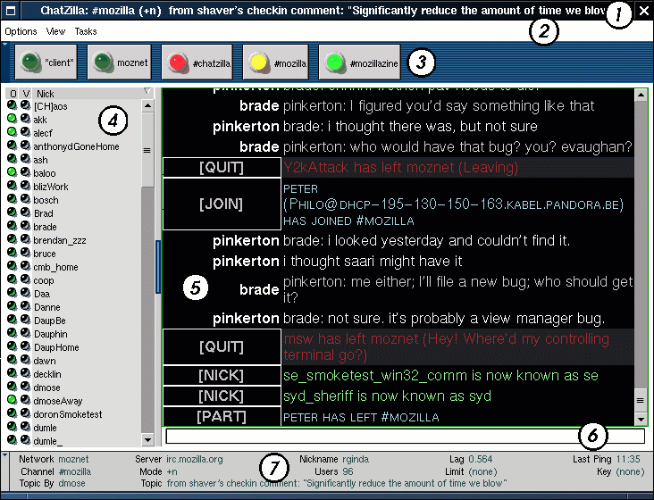

ChatZilla User's Guide
Before you start
This page talks about the specifics of using the ChatZilla IRC client. Please keep in mind that ChatZilla is not finished. It is usable if you're willing to accept a subset of the commands offered in more mature IRC clients. In fact, ChatZilla itself is built on top of a piece of software that itself is not finished (Mozilla, of course.) A large percentage of ChatZilla users experience crashes, odd behavior, rash, shortness of breath, and an urge to fix bugs. If you would like to contribute please say so on the netscape.public.mozilla.rt-messaging newsgroup, or send mail to rginda@netscape.com.If you are not familiar with IRC, please check out the FAQs available at www.irchelp.org.
Views
The ChatZilla output window (Item 5 in the Figure 1) only shows one view at a time. This view may represent messages coming from a channel you are speaking to, a user you are sending private messages to, a network you are connected to, or directly from ChatZilla. These types of views are referred to as Channel, User, Network, and Client views.
You interact with the current view by way of the input box (Item 6 in Figure 1.) Generally, you type a either a line of text or a command in the input box and press the ENTER key. A command is different from a line of text because all commands start with the command character, which is the "/" character by default. Commands instruct ChatZilla to perform some particular action. What happens when you type a line of text which is not a command depends on what type of view is active.
- The client view responds to non-command text by executing it as JavaScript code, displaying results in the output window. (If you know what you're doing, or even think you do, this can be fun. If not, don't worry about it. I'll post more information on how to use this feature later [Unless someone contributes it first.])
- Network views have no default interpretation for non-command text. Typing anything that is not a command while a network view is active will result in an error.
- Channel views will send any non-command text to the channel. Other channel members will see what you typed with your nickname attributed.
- User views will send any non-command text only to the user you are speaking to. The targeted user will see what you typed with your nickname attributed, no one else.
UI Elements
Also avaliable is a screenshot of a minimalist ChatZilla
{kind=link}
- Titlebar
The titlebar area displays information related to the current view.- If you are viewing channel activity, the titlebar will display the channel name, channel mode, and topic of discussion. If the views toolbar (Item 3 in Figure 1) is hidden, topic information will be omitted in order to save room for the activity list.
- If you are viewing a one-on-one chat, the titlebar will display the nickname of the user you are talking to.
- If you are viewing messages from a network, the titlebar will display the server you are connected to (if you are connected), your nickname (if you have successfully logged in), and the name of the network this server is on.
- Finally, if you are viewing the *client* view, the titlebar will display ``ChatZilla!''
If the views toolbar is hidden, a list of views with activity will be appended to whatever information already appears in the titlebar. For example, if the views toolbar were hidden in Figure 1, the titlebar would display ``ChatZilla: #mozilla (+n) -- Activity [3!, 5]'' instead. The exclamation point after the 3 indicates that some of the activity was directed to you (just as the flashing red light on the view button had.) You could then switch to the #chatzilla view by pressing F3.
- Menubar
The Menubar has the following menus...- Options
- Toggles
Options you can turn on and off- Debug messages
The IRC library that ChatZilla uses defines it's own event model, turning debug messages on will display information about the events being processed by this model. On windows, you may have to run mozilla with the -console option to see the debug output. - Munger
The munger is the component in ChatZilla responsible for munging plain text into HTMLified text. For example, by default the munger will turn *this text* into *this text*, /this text/ into /this text/, and _this text_ into _this text_ as well as a handful of similar transformations. The munger is also responsible for turning text into links, and figuring out when someone is talking to you. While the munger has been designed to be able to deactivate any number of these munging rules without affecting the others, this functionality is not yet available in the UI. All you get for now is an all-or-nothing deal.
HACK 1
- Debug messages
- Logging ...
This option is not yet implemented.
- Toggles
- View
Ways to adjust what you see...- Toolbar
Toggles the visibility of the views toolbar. Equivalent to the /toolbar command. - Info Tree
Toggles the visibility of the info tree. Equivalent to the /names command. - Statisbar
Toggles the visibility of the statusbar. Equivalent to the /statusbar command. - Icons in View Buttons
Toggles the visibility of LED icons in the views toolbar. If the icons are off, activity will be communicated by chaging the color of the text in the buttons. - CurrentView
- Hide
Drop the current view's icon from the toolbar, but save it's contents. The icon will reappear the next time there is activity on the view. Equivalent to the /hide command. - Clear
Clear the current view, discarding *all* content. Equivalent to the /clear command. - Delete
Clear the current view, discarding *all* content, and drop it's icon from the toolbar. Equivalent to the /delete command.
- Hide
- Toolbar
- Options
- Views Toolbar
The views toolbar contains a collection of buttons which represent the available views. It can be hidden with the View->Toolbar menu option, or the /toolbar command. The LEDs in the toolbar buttons change appearance depending on activity in the view they represent.- A bright yellow LED indicates that the view currently displayed in the output window. If the "Icons in View Buttons" option is turned off, activity directed to you is indicated by cyan text.
- A bright green LED indicates that the view has activity. Additionally, each time more activity occurs, the LED will flash. If the "Icons in View Buttons" option is turned off, activity is indicated by green text.
- A flashing red LED indicates that the view has activity directed to you. If the "Icons in View Buttons" option is turned off, activity directed to you is indicated by red text.
- A dim green LED indicates that the view has no activity. If the "Icons in View Buttons" option is turned off, no activity is indicated by black text.
- Info Tree
It's called the info tree because one day it hopes to show lots of different kinds of information, but so far, it only displays user information. When it is displaying user information, it does so in three columns; the first column indicates whether or not the user has operator privileges, if the light is one, the user is an operator. Column two indicates whether or not the user has voice privileges, again if the light is on, the user "has a voice", otherwise they don't. The third column displays the user's nickname. User information can be sorted on any of the three columns in either ascending or descending order by clicking on the column header. - Output Window
The output window shows messages from your current view. Messages are displayed in two columns. The first indicates the type of message to follow, the second is the text of the message. For channel and user views, messages from other users will display the nickname of the user who sent the message instead of the message type. - Input Box
The input box is where you type ChatZilla commands and text to send to users and channels. The default command character is a "/" (HACK 2.) You can use tab completion to finish your commands you start to type. For example, type /d and press TAB, ChatZilla will respond by adding an e to your command, giving you /de. This tells you that there are multiple commands that start with the letter "d", but they all have the second character "e". To see the list of possible completions for /de, press TAB twice (quickly.) ChatZilla should respond with ``Commands matching ``de'' are [delete, deop, desc, devoice]''. Assuming you wanted to change your description you can continue by:- typing ``sc'' and pressing ENTER.
- typing ``s'' and pressing TAB
- typing ``s'' and pressing ENTER
Notice that to execute a ChatZilla command, it does not need to be complete, only unique. Because there is no other command beginning with /des, it will automatically be interpreted as the description command.
When a channel view is active, tab completion works for nicknames as well. If the word you are typing is the first word in the input box, and it does not start with the command character (``/'' by default) TAB will match against the list of nicknames for the channel. When a match is found, the nickname will appear in you input box, with a ", " following it (HACK 3.) If the word you are typing is not the first word, a match will be suffixed with a single space. (ChatZilla assumes that if the nickname is the first word in the input box, you are directly addressing that person and inserts the ", " because it wants to help;)
- Status Bar
In channel views, the status bar shows details about the channel you're on.- Network is the network you are connected to.
- Server is the server (on the network) you are connected to.
- Nickname is your nickname.
- Lag is the number of seconds the server took to reply to the last ping ChatZilla sent (HACK 4.)
- Last Ping the time (in 24 hour format) that the last ping request was received from the IRC server.
- Channel is the channel you're talking to.
- Mode is the mode of the current channel.
- Users is the number of users in the channel.
- Limit is the maximum number of users allowed on the channel.
- Key is the key required to join the channel.
- Topic by is the nickname of the user who set the topic.
- Topic is the current topic of discussion for the channel.
The status bar can be hidden with the Views->Status Bar menu option, or the /statusbar command.
Hacks
Many ChatZilla users will not want to hear about this stuff, but if you're interested in what might happen in the future, want to add functionality to ChatZilla, or just like to muck around where you shouldn't be, these clues might help.
-
If you want to know more about the munger take a look at static.js and munger.js
- The command character is stored in the client.COMMAND_CHAR variable (it'll be a pref one of these days.) You could change it to be a ``bang'' (for example) by typing /eval client.COMMAND_CHAR = "!" in the input box. Changing it to something longer than one character will give undefined results.
- The characters appended to first-word nicknames which are tab completed are stored in the client.ADDRESSED_NICK_SEP variable. You can change this to ``: '' (for example) by typing /eval client.ADDRESSED_NICK_SEP = ": " in the input box. This can be as many characters as you want. (This needs to become a pref also.)
- Most irc servers send out pings requests every few minutes, just to make sure your client is still alive. When the IRC library used by ChatZilla hears one of these pings, it replys to the ping as expected and in addition sends out a ping request of it's own. The number of seconds between when this ping request went to the server and when the reply is received the is reported as the Lag.
Robert Ginda